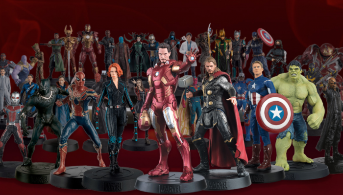

Figuras Marvel
Cuando pensamos en marcas de figuras Marvel con cierta presencia, se nos vienen a la cabeza empresas tan representativas del mercado como Hot Toys, Sideshow Collectibles Cada una de ella cuenta con sus características propias. Hot Toys, por ejemplo, se caracteriza por hacer figuras articulables con un nivel de detalle extraordinario, eso sí, a un precio muy elevado. Sideshow, por su parte, fabrica piezas estilo busto, que no se pueden mover y poseen una base que convierte en épico el instante cinematográfico que buscar representar; mientras que NECA se encarga de fabricar figuras a menor escala, también articuladas, aunque con un menos nivel de detalle, lo que abarata sustancialmente sus precios. Para que una figura pueda entrar en nuestra selecta lista debe de tener una relación precio-calidad buena, un nivel de detalle muy alto y contar con algún tipo de rareza, ya sea porque es antigua, no se fabricaron muchas unidades o está muy buscada por los coleccionistas.